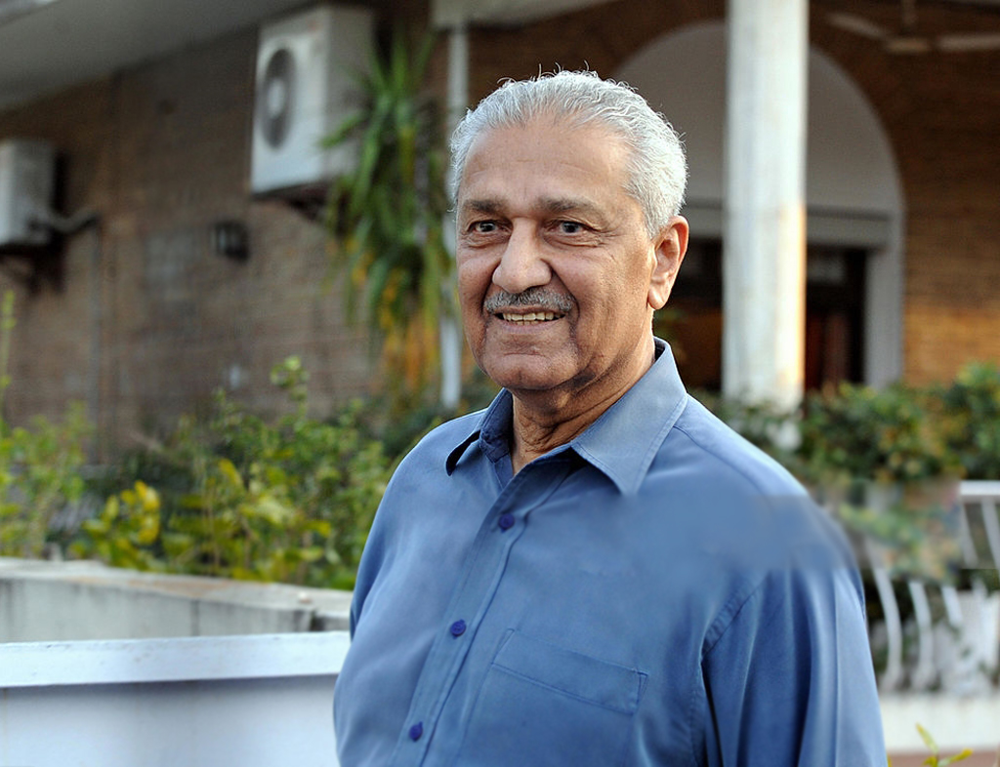

Dr. Abdul Qadeer Khan is a famous Pakistani nuclear scientist and a metallurgical engineer. He is widely regarded as the founder of gas-centrifuge enrichment technology for Pakistan’s nuclear deterrent program. Pakistan’s nuclear weapons program is a source of extreme national pride. As its “father”, A.Q. Khan, who headed Pakistan’s nuclear program for some 25 years, is considered a national hero.
Dr. Abdul Qadeer Khan was born in 1936 in Bhopal, India. He immigrated with his family to Pakistan in 1947. After studying at St. Anthony’s High School, Khan joined the D. J. Science College of Karachi , where he took physics and mathematics. His teacher at the college was famous solar physicist Dr. Bashir Syed. Khan earned a B.Sc. degree in physical metallurgy at the University of Karachi in 1960. Khan accepted a job as an inspector of weight and measures in Karachi after graduation. He later resigned and went to work in Netherlands in the 1970’s. Khan gained fame as a talented scientist at the nuclear plant he worked in. He had special access to the most restricted areas of the URENCO facility. He could also read the secret documentation on the gas centrifuge technology. In December, 1974, he came back to Pakistan and tried to convince the Prime Minister, Zulfikar Ali Bhutto, to adopt his Uranium route rather than Plutonium route in building nuclear weapons. According to media reports, A.Q. Khan had a close and cordial relationship with President General Mohammad Zia-ul-Haq and the Military of Pakistan. He also maintained a close relationship with the Pakistan Air Force. After his role in Pakistan’s nuclear program, Khan re-organized the Pakistani’s national space agency, SUPARCO. In the late of 1990s, Khan played an important role in Pakistan’s space program, particularly the Pakistan’s first Polar Satellite Launch Vehicle (PSLV) project and the Satellite Launch Vehicle (SLV). Khan’s unrestricted publicity of Pakistan’s nuclear weapons and ballistic missile capabilities brought humiliation to the Pakistan’s government. The United States began to think that Pakistan was giving nuclear weapons technology to North Korea, to get ballistic missile technology in exchange. Khan also came under renewed scrutiny following the September 11, 2001 attacks in the U.S. He allegedly sold nuclear technology to Iran. However, he was pardoned in 2004, but placed under house arrest. On the 22nd of August 2006, the Pakistani government declared that Khan had been diagnosed with prostate cancer and was undergoing treatment. He was released from house arrest in February 2009.
Khan was also a key figure in the establishment of several engineering universities in Pakistan. He set up a metallurgy and material science institute in Ghulam Ishaq Khan Institute of Engineering Sciences and Technology. The place, where Khan served as both executive member and director, has been named as Dr. A. Q. Khan Department of Metallurgical Engineering and Material Sciences. Another school, Dr. A. Q. Khan Institute of Biotechnology and Genetic Engineering at Karachi University, has also been named in his honor. Khan thus played a vital role in bringing metallurgical engineering courses to various universities of Pakistan. Despite his international image, Khan remains widely popular among Pakistanis and he is considered domestically to be one of the most-influential and respected scientists in Pakistan.